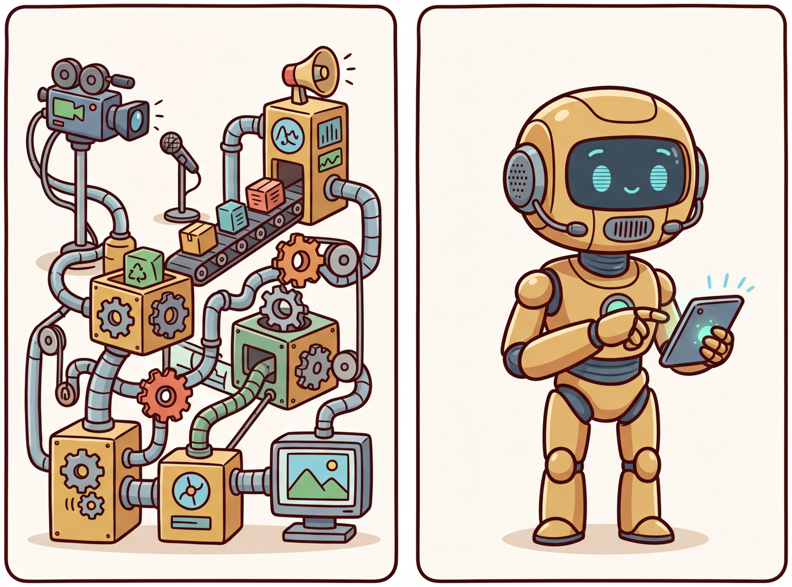
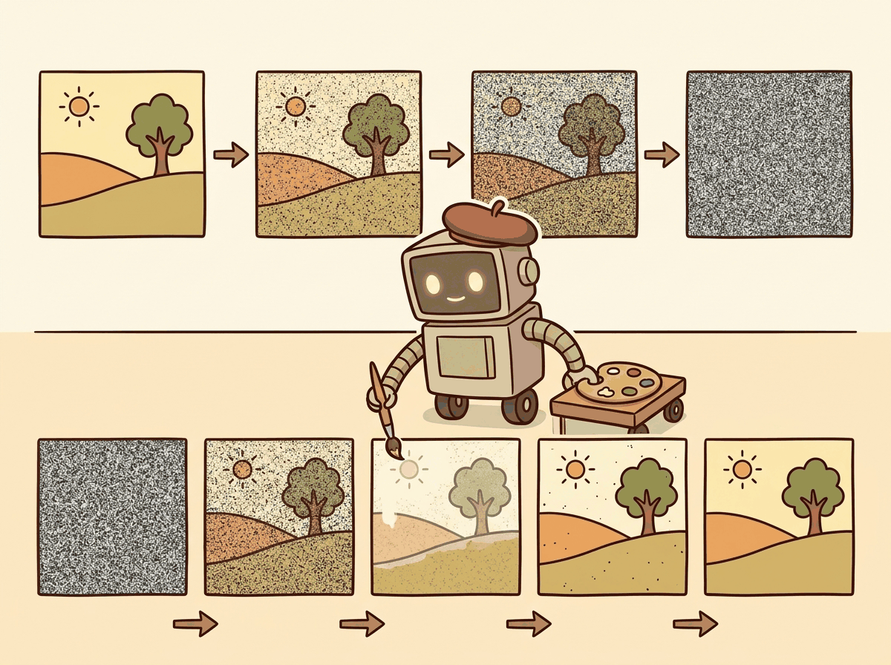

"I dream in latent space now. Every pixel is just a probability waiting to be sampled."
Pixel, Pixel-Drunk AI Agent
Image generation and visual understanding have converged into a unified multimodal AI stack. On the generation side, diffusion models and flow matching produce photorealistic images from text prompts, while controlled generation techniques (ControlNet, IP-Adapter) give fine-grained creative control. On the understanding side, vision encoders like CLIP and SigLIP bridge the gap between pixels and language, enabling vision-language models (GPT-4V, LLaVA, Gemini) that can see, describe, and reason about images. Together, these technologies form the foundation of multimodal AI. The Transformer architecture from Section 4.1 serves as the backbone for both the generation and understanding sides of this stack.
Prerequisites
This section assumes familiarity with the Transformer architecture from Section 4.1 and embedding concepts from Section 18.1. Understanding how LLMs process text from Section 6.1 provides essential context for extending these models to other modalities.

26.1.1 Diffusion Models for Image Generation

Diffusion models generate images by learning to reverse a noise-addition process. During training, the model learns to predict and remove noise from progressively corrupted images. During inference, it starts from pure random noise and iteratively denoises it into a coherent image, guided by a text prompt. This elegant framework has become the dominant paradigm for high-quality image generation, surpassing earlier approaches like GANs and VAEs in both quality and controllability.
Diffusion models literally learn by destroying images and then figuring out how to rebuild them. It is the Bob Ross school of machine learning: "We don't make mistakes, just happy little denoising steps."
The Forward and Reverse Process
The forward process adds Gaussian noise to a clean image over T timesteps until the image becomes
pure noise. The reverse process, parameterized by a neural network (typically a U-Net or transformer), learns
to denoise at each step. The key insight is that predicting the noise added at each step is equivalent to
learning the score function (gradient of the log probability) of the data distribution. illustrates the forward and reverse diffusion processes.
![Forward and reverse diffusion processes shown as two panels. Forward panel: a clean sample x_0 has Gaussian noise added step by step via q(x_t given x_{t-1}), passing through intermediate noisy states x_1, ..., until reaching x_T which is pure Gaussian noise. Reverse panel: starting from x_T sampled from N(0, I), a learned model p_theta(x_{t-1} given x_t) denoises step by step back to a reconstructed sample x_0. A dotted arrow connects the end of the forward chain to the start of the reverse chain, indicating the training-time correspondence between them.](images/fig-26.1.7-ddpm-forward-reverse.png)
Diffusion models and LLMs solve the same problem in different spaces. An LLM generates text by predicting one token at a time, progressively refining noise (the initial randomness of token sampling) into coherent text. A diffusion model generates images by predicting one denoising step at a time, progressively refining noise into coherent pixels. Both are iterative refinement processes guided by learned priors. This parallel is not just a metaphor: recent "any-to-any" models like Gemini and GPT-4o unify text and image generation within a single transformer, treating image generation tokens and text tokens as parts of the same sequence. The decoding strategies from Chapter 05 have direct analogs in the diffusion sampling process.
Latent Diffusion (Stable Diffusion)
Running diffusion directly in pixel space is computationally expensive. Stable Diffusion solves this by operating in the latent space of a pre-trained variational autoencoder (VAE). The image is first encoded into a compact latent representation (typically 64x64 instead of 512x512), diffusion happens in this smaller space, and the result is decoded back to pixel space. This idea of working in a compressed latent space echoes the embedding concepts from Section 18.1, where high-dimensional data is mapped to dense representations. This reduces computation by roughly 50x while maintaining image quality.
A 512 × 512 RGB image has 512 × 512 × 3 = 786,432 values. The VAE encoder compresses this to a 64 × 64 latent with 4 channels: 64 × 64 × 4 = 16,384 values. That is a 48× reduction in dimensionality. Because diffusion step cost scales roughly with the number of elements, running 30 denoising steps in latent space is comparable to running a single step in full pixel space. SDXL raises the latent resolution to 128 × 128 × 4 = 65,536 values for its 1024 × 1024 output (a 48× compression ratio again), keeping generation feasible on consumer GPUs with 8 GB of VRAM.
# Stable Diffusion XL: load the SDXL pipeline with a DPM++ scheduler
# for high-quality text-to-image generation using classifier-free guidance
# in the latent space of a pre-trained VAE.
import torch
from diffusers import StableDiffusionXLPipeline, DPMSolverMultistepScheduler
# Load Stable Diffusion XL with optimized scheduler
pipe = StableDiffusionXLPipeline.from_pretrained(
"stabilityai/stable-diffusion-xl-base-1.0",
torch_dtype=torch.float16,
variant="fp16",
)
pipe.scheduler = DPMSolverMultistepScheduler.from_config(pipe.scheduler.config)
pipe = pipe.to("cuda")
# Generate with classifier-free guidance
prompt = "A serene Japanese garden with cherry blossoms, watercolor style"
negative_prompt = "blurry, low quality, distorted"
image = pipe(
prompt=prompt,
negative_prompt=negative_prompt,
num_inference_steps=30,
guidance_scale=7.5, # Higher = more prompt adherence
width=1024,
height=1024,
).images[0]
image.save("japanese_garden.png")Skip local GPU setup entirely with the Replicate API (pip install replicate):
import replicate
output = replicate.run(
"stability-ai/sdxl:7762fd07cf82c948",
input={
"prompt": "A serene Japanese garden with cherry blossoms, watercolor style",
"negative_prompt": "blurry, low quality, distorted",
"width": 1024,
"height": 1024,
},
)
# output is a URL to the generated imageClassifier-free guidance (CFG) is the key technique that makes text-conditional diffusion work well. During training, the text condition is randomly dropped a fraction of the time, teaching the model to generate both conditionally and unconditionally. At inference, the model output is extrapolated away from the unconditional prediction: output = uncond + scale * (cond - uncond). Higher guidance scales produce images that more closely match the prompt but with less diversity. Typical values range from 5 to 15.
Flow Matching and Rectified Flows
Flow matching is a newer paradigm that learns a velocity field transporting samples from a noise distribution to the data distribution along straight paths. Unlike diffusion models that follow curved trajectories through noise space, flow matching creates straighter paths that require fewer sampling steps. Stable Diffusion 3 and Flux use this approach, achieving higher quality with fewer inference steps (often 4 to 8 steps instead of 20 to 50 for traditional diffusion).
# Using Flux (flow matching model) via the diffusers library
from diffusers import FluxPipeline
pipe = FluxPipeline.from_pretrained(
"black-forest-labs/FLUX.1-schnell",
torch_dtype=torch.bfloat16,
)
pipe = pipe.to("cuda")
# Flux-schnell needs only 4 steps thanks to flow matching
image = pipe(
prompt="A cyberpunk cityscape at sunset, neon reflections on wet streets",
num_inference_steps=4,
guidance_scale=0.0, # Schnell uses guidance distillation
height=1024,
width=1024,
).images[0]When choosing between diffusion and flow matching for production image generation, start with flow matching (Flux) if latency matters. Four inference steps at comparable quality means 5 to 10x faster generation per image, which compounds dramatically when serving hundreds of concurrent users. Reserve traditional diffusion schedulers (DDPM, DPM++) for offline batch jobs where quality at 50 steps justifies the extra compute.
DALL-E and Midjourney
OpenAI's DALL-E 3 generates images by first using GPT-4 to rewrite user prompts into detailed descriptions, then feeding those descriptions to a diffusion model. This prompt rewriting step significantly improves output quality, because users often write terse prompts that lack the detail needed for good generation. Midjourney, while proprietary, is notable for its aesthetic quality and has become the benchmark for artistic image generation. Both systems demonstrate that engineering around the core model (prompt rewriting, aesthetic fine-tuning, safety filtering) is as important as the model architecture itself.
# DALL-E 3 image generation via the OpenAI API
# with quality, size, and style parameters for fine-grained control.
from openai import OpenAI
client = OpenAI()
# DALL-E 3 via the OpenAI API
response = client.images.generate(
model="dall-e-3",
prompt="An isometric illustration of a cozy bookshop with warm lighting",
size="1024x1024",
quality="hd",
n=1,
)
image_url = response.data[0].url
revised_prompt = response.data[0].revised_prompt
print(f"Revised prompt: {revised_prompt}")
print(f"Image URL: {image_url}")26.1.2 Controlled Image Generation
While text prompts offer creative flexibility, many applications require more precise spatial and stylistic control. ControlNet, IP-Adapter, and related techniques add conditioning signals beyond text, enabling edge-guided generation, pose transfer, style reference, and inpainting.
ControlNet
ControlNet adds spatial conditioning to a pre-trained diffusion model by attaching a trainable copy of the encoder blocks. The original model weights are frozen, and the ControlNet learns to inject spatial information (edges, depth maps, poses, segmentation masks) into the generation process. This allows precise control over the structure of generated images while preserving the model's learned generative capabilities. Figure 26.1.4 shows the ControlNet architecture.
# ControlNet with Canny edge detection: extract edges from a reference
# image and use them to guide Stable Diffusion generation.
from diffusers import StableDiffusionControlNetPipeline, ControlNetModel
from diffusers.utils import load_image
import cv2
import numpy as np
from PIL import Image
# Load a Canny edge ControlNet
controlnet = ControlNetModel.from_pretrained(
"lllyasviel/control_v11p_sd15_canny",
torch_dtype=torch.float16,
)
pipe = StableDiffusionControlNetPipeline.from_pretrained(
"runwayml/stable-diffusion-v1-5",
controlnet=controlnet,
torch_dtype=torch.float16,
).to("cuda")
# Extract edges from a reference image
ref_image = load_image("reference_building.jpg")
ref_np = np.array(ref_image)
edges = cv2.Canny(ref_np, 100, 200)
control_image = Image.fromarray(edges)
# Generate with edge guidance
result = pipe(
prompt="A futuristic glass skyscraper, photorealistic",
image=control_image,
num_inference_steps=30,
controlnet_conditioning_scale=0.8,
).images[0]IP-Adapter: Style and Subject Transfer
IP-Adapter (Image Prompt Adapter) enables using images as prompts alongside text. It works by encoding a reference image through CLIP's image encoder and injecting those features into the cross-attention layers of the diffusion model. This enables style transfer (generating images in the style of a reference) and subject consistency (maintaining the same character or object across multiple generations).
The shift from text-only to multi-signal conditioning (text + edges + depth + style reference) transforms diffusion models from creative toys into production tools. ControlNet preserves spatial structure, IP-Adapter transfers style and identity, and combining them gives designers the precise control needed for commercial workflows. The same base model serves radically different use cases through different conditioning signals.
26.1.3 Vision Encoders: Bridging Pixels and Language
While diffusion models generate images from text, vision encoders work in the opposite direction: they convert images into representations that language models can understand. The evolution from ViT to CLIP to SigLIP has produced increasingly powerful visual representations that form the backbone of modern multimodal AI.
Vision Transformer (ViT)
The Vision Transformer applies the transformer architecture directly to images by splitting them into fixed-size
patches (typically 16x16 or 14x14 pixels), flattening each patch into a vector, and processing the sequence of
patch embeddings with standard transformer layers. A special [CLS] token aggregates information
across all patches, producing a single vector representation of the entire image. ViT demonstrated that
transformers, originally designed for text, work remarkably well for vision when trained on enough data.
ViT Patch Embedding.
An image of size H × W with C channels is divided into N = (H × W) / P2 non-overlapping patches of size P × P. Each patch is flattened into a vector of dimension P2 · C and linearly projected to the model dimension D:
$$z_{0} = [x_{\text{cls}} ;\; E \cdot x_{1} ;\; E \cdot x_{2} ;\; \ldots ;\; E \cdot x_{N}] + E_{\text{pos}}$$where $E \in \mathbb{R}^{D \times (P^{2} \cdot C)}$ is the patch embedding matrix, $x_{\text{cls}}$ is a learnable classification token, and $E_{\text{pos}} \in \mathbb{R}^{(N+1) \times D}$ encodes positional information. For a \$224 \times 224$ image with \$16 \times 16$ patches, this yields $N = 196$ patch tokens.
CLIP: Contrastive Language-Image Pre-training
CLIP jointly trains a vision encoder and a text encoder to embed images and their textual descriptions into a shared vector space. Matching image-text pairs are pushed close together while non-matching pairs are pushed apart. Trained on 400 million image-text pairs scraped from the internet, CLIP learns visual concepts from natural language supervision, enabling zero-shot image classification, image search, and serving as the text encoder for diffusion models like Stable Diffusion. Figure 26.1.5 depicts CLIP's contrastive training of image and text encoders.
CLIP Contrastive Loss (InfoNCE).
Given a batch of N image-text pairs, let Ii and Tj be the L2-normalized embeddings of the i-th image and j-th text. The similarity matrix is sij = Ii · Tj / τ , where τ is a learned temperature parameter. The loss symmetrically maximizes similarity for matching pairs (i = j) while minimizing it for non-matching pairs:
$$\begin{aligned}\mathscr{L}_{image} &= -(1/N) \sum _{i=1..N} \log( \exp(s_{ii}) / \sum _{j=1..N} \exp(s_{ij}) ) \\ \mathscr{L}_{text} &= -(1/N) \sum _{j=1..N} \log( \exp(s_{jj}) / \sum _{i=1..N} \exp(s_{ij}) ) \\ \mathscr{L}_{CLIP} &= (\mathscr{L}_{image} + \mathscr{L}_{text}) / 2\end{aligned}$$Each row of the similarity matrix is a softmax classification problem: "which of the N texts matches this image?" and vice versa. The temperature τ (typically initialized to 0.07) controls the sharpness of the distribution.
Image Classification with CLIP
CLIP's shared embedding space enables zero-shot image classification without task-specific training. You encode the image and a set of candidate text labels, then find the label whose embedding is closest to the image embedding. This generalizes across domains without fine-tuning.
# Zero-shot image classification with CLIP: compute cosine similarity
# between image and text embeddings, then softmax to get probabilities.
from transformers import CLIPProcessor, CLIPModel
from PIL import Image
model = CLIPModel.from_pretrained("openai/clip-vit-large-patch14")
processor = CLIPProcessor.from_pretrained("openai/clip-vit-large-patch14")
image = Image.open("photo.jpg")
labels = ["a photo of a cat", "a photo of a dog", "a photo of a car"]
inputs = processor(text=labels, images=image, return_tensors="pt", padding=True)
outputs = model(**inputs)
# Cosine similarity between image and each label
logits_per_image = outputs.logits_per_image
probs = logits_per_image.softmax(dim=1)
for label, prob in zip(labels, probs[0]):
print(f"{label}: {prob.item():.3f}")26.1.4 Vision-Language Models
Vision-language models (VLMs) go beyond CLIP's contrastive matching to enable full visual reasoning. These models accept images alongside text in their input and generate free-form text responses. They can describe images, answer questions about visual content, extract structured data from screenshots, and reason about spatial relationships. Calling these models through the standard LLM APIs (Chapter 11) follows the same patterns as text-only models. The rapid evolution of VLMs represents one of the most impactful recent developments in AI.
Comparison of Vision-Language Models
| Model | Vision Encoder | Architecture | Key Strength | Access |
|---|---|---|---|---|
| GPT-4V / GPT-4o | Proprietary | Native multimodal | Best general reasoning (as of 2026) | API |
| Gemini 1.5 / 2.0 | Native | Natively multimodal | Long context (1M tokens), interleaved modalities | API |
| Claude 3.5 Sonnet | Proprietary | Native multimodal | Document/chart analysis | API |
| LLaVA 1.6 | CLIP ViT-L | Projection + LLM | Open-source, customizable | Open weights |
| Qwen-VL / Qwen2-VL | ViT + dynamic resolution | Projection + LLM | Multi-image, video, grounding | Open weights |
| InternVL 2.5 | InternViT-6B | Projection + LLM | Leading open benchmark scores (as of 2026) | Open weights |
Using GPT-4V for Visual Reasoning
This snippet sends an image to GPT-4V and extracts structured visual reasoning from the response.
# GPT-4o Vision API: encode an image as base64 and send it
# alongside a text prompt for visual reasoning and analysis.
from openai import OpenAI
import base64
client = OpenAI()
# Encode image to base64
with open("chart.png", "rb") as f:
image_b64 = base64.b64encode(f.read()).decode()
response = client.chat.completions.create(
model="gpt-4o",
messages=[{
"role": "user",
"content": [
{"type": "text", "text": "Analyze this chart. What trends do you see?"},
{
"type": "image_url",
"image_url": {
"url": f"data:image/png;base64,{image_b64}",
"detail": "high" # "high" for detailed analysis
}
}
]
}],
max_tokens=1000,
)
print(response.choices[0].message.content)Open-Source VLMs with LLaVA
LLaVA (Large Language and Vision Assistant) is the most influential open-source VLM architecture. It connects a CLIP vision encoder to a language model through a simple projection layer (either a linear layer or a small MLP). The model is trained in two stages: first aligning the vision-language features using image-caption pairs, then fine-tuning on visual instruction data. This simple and effective design has spawned many variants and remains the template for most open-source VLMs.
# LLaVA visual question answering: load the LLaVA-v1.6-Mistral model
# and extract structured information from a receipt image.
from transformers import LlavaNextProcessor, LlavaNextForConditionalGeneration
from PIL import Image
model_id = "llava-hf/llava-v1.6-mistral-7b-hf"
processor = LlavaNextProcessor.from_pretrained(model_id)
model = LlavaNextForConditionalGeneration.from_pretrained(
model_id, torch_dtype=torch.float16, device_map="auto"
)
image = Image.open("receipt.jpg")
prompt = "[INST] <image>\nExtract the total amount and date from this receipt. [/INST]"
inputs = processor(prompt, image, return_tensors="pt").to("cuda")
output = model.generate(**inputs, max_new_tokens=200)
result = processor.decode(output[0], skip_special_tokens=True)
print(result)Vision-language models can hallucinate visual details that are not present in the image. They may confidently describe objects that do not exist, misread text in images, or fabricate numerical values from charts. For high-stakes applications (medical imaging, document extraction, autonomous driving), always validate VLM outputs against ground truth or use them as suggestions that require human verification rather than trusted outputs.
Gemini: Natively Multimodal
Google's Gemini models represent a different approach to multimodal AI. Rather than bolting a vision encoder onto a language model, Gemini is trained from the ground up on interleaved text, image, audio, and video data. This native multimodal training enables capabilities that are difficult to achieve with adapter-based approaches, such as understanding spatial relationships across multiple images, processing long videos, and handling interleaved image-text sequences. Gemini 2.0 extends this to native image generation, combining understanding and generation in a single model.
# Gemini multi-image reasoning: pass two images in a single request
# for comparative analysis using Gemini 2.0 Flash.
import google.generativeai as genai
from PIL import Image
genai.configure(api_key="YOUR_API_KEY")
model = genai.GenerativeModel("gemini-2.0-flash")
# Multi-image reasoning
img1 = Image.open("before.jpg")
img2 = Image.open("after.jpg")
response = model.generate_content([
"Compare these two images and describe what changed:",
img1,
img2,
])
print(response.text)There are two philosophies for building multimodal models. The adapter approach (LLaVA, Qwen-VL) takes a strong text-only LLM and adds vision through projection layers. This is modular and leverages existing LLM capabilities. The native approach (Gemini, GPT-4o) trains on all modalities from the start. This theoretically allows deeper cross-modal understanding but requires enormously more training data and compute. In practice, both approaches produce strong results, and the best choice depends on your specific requirements for customization, deployment, and supported modalities.
Optimizing image generation latency for production. When serving Stable Diffusion or Flux at scale, three techniques dramatically reduce per-request latency. First, compile the model with torch.compile(pipe.unet, mode="reduce-overhead") for a 20 to 40% speedup on subsequent calls. Second, use TensorRT or ONNX Runtime for GPU-optimized inference. Third, batch requests with similar dimensions to maximize GPU utilization. For APIs like DALL-E 3, implement request queuing with exponential backoff and cache generated images by prompt hash, since repeated prompts are common in production (e.g., product thumbnails, marketing templates). The diffusers library's enable_model_cpu_offload() method lets you run SDXL on a single 8 GB GPU by moving pipeline stages to CPU when not in use.
Who: Search engineering team at a large e-commerce company
Situation: The product catalog contained 2 million items, each with images and descriptions. Customers frequently searched using visual references: "shoes like these but in blue" or pasting a screenshot from Instagram.
Problem: Text-only RAG could not match visual queries to products, and keyword search missed stylistic attributes that were visible but not described in product text.
Decision: The team built a multimodal RAG pipeline using CLIP embeddings for both product images and text, stored in a vector database (Qdrant). User queries, whether text or image, were encoded with CLIP and matched against both image and text embedding indices.
How: Product images were embedded with clip-vit-large-patch14. Text descriptions were embedded with the same model's text encoder. At query time, image queries used cosine similarity against the image index, while text queries searched both indices with a weighted fusion (0.6 image, 0.4 text). Top results were re-ranked by a GPT-4o mini call that verified visual similarity.
Result: Visual search conversion rates improved by 34% over text-only search. The hybrid approach handled "find me something like this but different" queries that neither pure text nor pure image search could serve.
Lesson: Multimodal RAG works best when image and text embeddings share a common space (CLIP), enabling cross-modal retrieval without separate pipelines for each modality.
Who: Design technology team at an architecture firm
Situation: Architects needed to quickly generate photorealistic exterior renderings from CAD wireframe drawings to show clients during early design reviews.
Problem: Standard text-to-image generation produced visually impressive buildings but could not respect the precise structural geometry defined in the architectural drawings.
Dilemma: Traditional 3D rendering provided geometric accuracy but took 2 to 4 hours per scene. Pure text-to-image diffusion was fast but geometrically unconstrained.
Decision: The team used ControlNet with depth and edge conditioning maps extracted from the CAD models to guide Stable Diffusion XL generation.
How: They exported depth maps and Canny edge images from their CAD software, used these as ControlNet inputs alongside text prompts describing materials and lighting conditions, and fine-tuned IP-Adapter weights with the firm's preferred architectural style.
Result: Rendering time dropped from hours to under 30 seconds per image. Structural accuracy was maintained because ControlNet enforced the spatial layout from the original drawings. Client satisfaction with early design presentations increased significantly.
Lesson: Controlled generation techniques like ControlNet transform diffusion models from creative exploration tools into production systems that respect precise spatial constraints.
Most vision-language models resize images internally, but sending a 4K image wastes bandwidth and latency. Resize to the model's expected resolution (typically 336 to 768 pixels on the short side) before the API call to save 80% or more on upload time.
- Diffusion models generate images by learning to reverse a noise-addition process. Latent diffusion (Stable Diffusion) makes this efficient by operating in compressed VAE latent space.
- Flow matching (Flux, SD3) learns straighter generation paths, enabling high-quality images in 4 to 8 steps instead of 20 to 50 for standard diffusion.
- Controlled generation techniques (ControlNet for spatial structure, IP-Adapter for style transfer) transform diffusion models from creative tools into precise production systems.
- CLIP bridges vision and language through contrastive learning, enabling zero-shot classification and serving as the text encoder for most diffusion models.
- Vision-language models (GPT-4V, LLaVA, Gemini) combine vision encoders with LLMs for free-form visual reasoning, with the choice between adapter and native architectures depending on requirements.
- VLM hallucination remains a serious concern; always validate visual outputs for high-stakes applications.
Vision-Language-Action (VLA) models extend VLMs into the physical world. The same vision-language backbone used in models like LLaVA and Gemini can be fine-tuned to output robot motor commands instead of text tokens. RT-2 demonstrated this first by training a PaLM-E vision-language model to emit discretized action tokens for a robotic arm.
OpenVLA (7B parameters, open source) builds on a Llama 2 backbone with a SigLIP vision encoder and matches the performance of the much larger RT-2-X. Physical Intelligence's pi0 takes a different approach, pairing a VLM with a flow-matching action head to produce smooth, continuous trajectories for dexterous manipulation. The progression from VLM to VLA is conceptually straightforward: replace the text decoder with an action decoder while keeping the visual grounding intact. For the full story on VLA models, cross-embodiment transfer, and sim-to-real training, see Section 27.7.
Show Answer
Show Answer
Show Answer
Show Answer
Show Answer
Open Questions:
- Can diffusion models achieve real-time generation speeds (under 100ms) without sacrificing quality? Consistency models and adversarial distillation are pushing toward single-step generation, but quality gaps remain at high resolutions.
- How can we ensure generated images are factually grounded? Current models can produce highly realistic but entirely fabricated scenes. Research into grounded generation (combining retrieval with generation, as in Section 19.1) may address this.
Recent Developments (2024-2025):
- Flux and Stable Diffusion 3 demonstrated that flow matching produces higher-quality images with 4x fewer inference steps than traditional diffusion, making production deployment more practical.
- OpenAI's native image generation in GPT-4o (March 2025) unified understanding and generation within a single model, eliminating the need for separate diffusion pipelines.
- Video-to-3D pipelines (combining video generation from Section 26.2 with reconstruction) are enabling rapid 3D asset creation for games and AR/VR.
Explore Further: Compare image generation quality between SDXL (diffusion) and Flux-schnell (flow matching) at different step counts. Measure both FID scores and human preference ratings to understand the quality-speed tradeoff.
Exercises
Explain the forward and reverse processes of a diffusion model in your own words. Why is the reverse process harder than the forward process?
Answer Sketch
Forward: gradually add Gaussian noise to an image over many steps until it becomes pure noise. This is simple (just add noise). Reverse: learn to predict and remove the noise at each step, gradually recovering the original image. This is harder because the model must learn the data distribution to know what 'clean' looks like. The reverse process is essentially learning to generate data from noise.
What is the advantage of running diffusion in latent space (Stable Diffusion) rather than pixel space? What role does the VAE play in this architecture?
Answer Sketch
Latent space diffusion operates on compressed representations (e.g., 64x64 latent instead of 512x512 pixels), making it dramatically faster and less memory-intensive. The VAE (Variational Autoencoder) compresses images to latent representations and decodes them back. This separation means the diffusion model works in a lower-dimensional space while the VAE handles the pixel-level details.
Generate images with a diffusion model using three different schedulers (DPM++, Euler, DDIM) at 20 and 50 steps each. Compare the visual quality and measure generation time for each configuration.
Answer Sketch
Use the diffusers library. Load a pipeline, swap the scheduler using pipe.scheduler = DPMSolverMultistepScheduler.from_config(...). Generate the same image (same prompt and seed) with each scheduler at both step counts. Record wall-clock time. Typically, DPM++ produces good results at fewer steps; DDIM is more deterministic; Euler is a good balance.
Describe how a Vision-Language Model (VLM) like LLaVA processes an image and text query together. What is the role of the vision encoder, and how are visual features integrated with the language model?
Answer Sketch
The vision encoder (e.g., CLIP ViT) processes the image into a sequence of visual feature tokens. These tokens are projected into the language model's embedding space via a projection layer. The language model receives the visual tokens concatenated with the text tokens and processes them together. This allows the model to reason about the image content in natural language.
Implement classifier-free guidance (CFG) from scratch for a pre-trained diffusion model. Show how increasing the guidance scale improves text-image alignment but may reduce diversity.
Answer Sketch
At each denoising step, run two forward passes: one conditioned on the text prompt, one unconditional (empty prompt). The guided prediction = unconditional + scale * (conditional - unconditional). Higher scales push the output closer to the text description. Generate the same prompt with scales 1, 5, 10, 15. At high scales, images become oversaturated and less diverse. Plot the trade-off.
What Comes Next
In the next section, Section 26.2: Audio, Music and Video Generation, we explore audio, music, and video generation, covering speech synthesis, sound generation, and emerging video models.
Rombach, R., Blattmann, A., Lorenz, D., et al. (2022). "High-Resolution Image Synthesis with Latent Diffusion Models." arXiv:2112.10752
Zhang, L., Rao, A., & Agrawala, M. (2023). "Adding Conditional Control to Text-to-Image Diffusion Models." arXiv:2302.05543
Ye, H., Zhang, J., Liu, S., et al. (2023). "IP-Adapter: Text Compatible Image Prompt Adapter for Text-to-Image Diffusion Models." arXiv:2308.06721
Radford, A., Kim, J.W., Hallacy, C., et al. (2021). "Learning Transferable Visual Models From Natural Language Supervision." arXiv:2103.00020
Liu, H., Li, C., Wu, Q., & Lee, Y.J. (2023). "Visual Instruction Tuning." arXiv:2304.08485